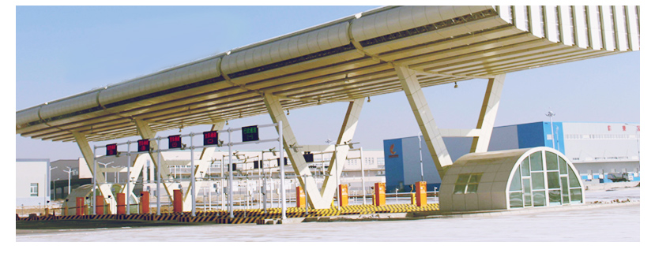

一次申报 一次查验 一次放行
“三个一”通关模式助企业降本增效

为落实国务院促进外贸稳定增长八条政策措施的重要抓手,进一步深化合作、促进贸易便利的重要举措,改进监管和服务，促进对外贸易平稳发展的具体行动。以信息化的手段，在不改变海关和检验检疫原有执法管理体制和业务系统格局的基础上，通过机制优化和模式创新，实现关检信息共享、执法互助，简化通关手续，提高通关效率，降低企业贸易成本，同时为企业提供公开透明的通关环境，实现阳光通关。
按照现行的报检和报关程序，企业应在报检系统录入“报检单”向检验检疫部门报检，在收到检验检疫部门的“通关单”后，再进入报关系统录入“报关单”电子数据向海关申报。进出口企业需要分头委托报检公司和报关公司办理手续，存在企业多头联系、多头申报、来回奔波的弊病。一次查验、一次放行，最大程度地简化通关流程，提高通关效率。
“三个一”是海关与出入境检验检疫部门合作推行的以“一次申报，一次查验，一次放行”的方式对进出口货物进行监管、验放的通关模式。“一次申报”，即“一次录入，分别申报”，是指企业只需一次录入申报数据，分别向海关和检验检疫部门发送。“一次查验”，即一次开箱，是指关检双方需要对同一批货物实施查验和检验检疫的，海关与检验检疫部门按照各自职责共同进行查验和检验检疫。“一次放行”即“关检联网核放”，是指对于运抵口岸的货物，海关和检验检疫部门分别发出核放信息，企业凭关检的核放信息办理货物提离手续。
“三个一”提高通关效率
“三个一”通关模式，将原来串联的“先报检后报关”通关流程转变成并联的“报检和报关同时进行”，对提高通关效率，减轻企业负担，优化口岸通关环境，促进武汉乃至湖北省对外贸易的发展具有重要意义。
首先，“一次申报”让企业只需完成一次输入，必输项信息进一步深度整合。即可同时完成报检和报关的录入。
其次，对于海关和检验检疫部门同时需要开箱查验、检验检疫的货物，实施“一次查验”可以减少重复吊箱、重复开箱等程序，移箱、掏箱费用比以前可节省一半，从而减轻企业负担，大幅提高通关效率。
第三，关检双方把一次放行信息发送给武汉电子口岸国际贸易单一窗口平台。武汉关区港口以及各码头根据放行信息进行抬杆放行。企业可自主登录平台获知相关放行信息，办理提货手续。一次放行利益信息化系统实现了放行信息的电子共享，有利于企业及时了解货物通关进程，进一步提高港口作业效率。
“三步走”企业顺利通关
根据“三个一”通关模式，企业只要“三步走”就能顺利通关。
第一步：在“一次申报”环节，企业将相关申报信息通过公共信息平台进行录入，然后分别向检验检疫、海关进行申报。
第二步：在“一次查验”环节，企业收到公共信息平台发送的报关号、报检号、提单号、集装箱号、移箱到位时间、集装箱摆放位置等信息后，通过公共信息平台向海关和检验检疫发起“一次查验”邀约，确定“一次查验”的具体时间。
第三步：在“一次放行”环节，企业凭公共信息平台的核放信息办理货物提离手续。
进出口企业需注意事项
在“三个一”通关模式的各环节，进出口企业分别要注意以下事项：
一是在“一次申报”环节，企业必须严格按照录入平台显示的要求进行规范操作，并且确保录入的信息真实准确。
二是在“一次查验”环节，企业发起“邀约查验时间”后，必须达成关检双方的一致同意，若有一方不同意邀约查验时间的，企业在公共信息平台上更改时间后重新发出邀约，直至双方确定“一次查验”时间为止。
三是在“一次放行”环节，企业应认真核对核放信息，发现疑问应及时与相关部门联系。